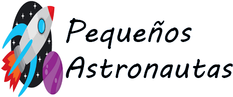

En Pequeños Astronautas Escuela Infantil te ayudamos a cuidar y educar a los que más quieres.
Somos una escuela infantil en Majadahonda con varios años de experiencia en Educación Infantil de primer ciclo (de 0 a 3 años).
Nuestro objetivo es introducir a los niños en el aprendizaje pero, sobre todo, que sean felices, porque un niño feliz aprende con facilidad.Día a día, todo el equipo educativo nos esforzamos por respetar y acompañar al niño en el proceso de maduración de su personalidad de forma global: intelectual, psicomotor y social, potenciando todas sus posibilidades a través de un proyecto educativo integral.
En nuestra escuela infantil nos planteamos un tipo de centro creativo, activo, realista, concreto y muy cercano a la realidad. Contamos, para conseguirlo, con un equipo de profesionales con amplia experiencia, en el cual trabajan conjuntamente docentes especializados y titulados en educación infantil, psicomotricidad, inglés y música. En estas primeras etapas, consideramos fundamental la colaboración y el apoyo a los padres. Por eso los progenitores también tienen su espacio, colaborando activamente con los docentes en la labor pedagógica. En nuestra escuela infantil apostamos por la excelencia en el trato con las familias, cuidando de los alumnos y de su educación. Horarios amplios y flexibles. Amplio calendario. Nuestro centro cierra únicamente los días de fiesta y la primera quincena de agosto. Gestión de entrada y salida mediante lectura de huella dactilar. Centro concertado con el Colegio Bristol. Precios especiales. Valoramos la situación de cada familia, con tarifas adaptadas para un progenitor en paro y en busca de empleo, más de un hermano en la escuela, familias numerosas… Gestión de cheques guardería tanto de la Comunidad de Madrid como de diversas entidades privadas. Nuestro centro está homologado por la comunidad de Madrid y, por tanto, nos atenemos a los conocimientos exigidos por la misma. Además ponemos un especial interés en la educación en valores, la educación emocional, el aprendizaje del inglés desde el año, el desarrollo de la persona y la autonomía personal. En resumen, todo aquello que contribuya a hacer de nuestros niños, en el futuro, personas con valores, libertad y responsabilidad.